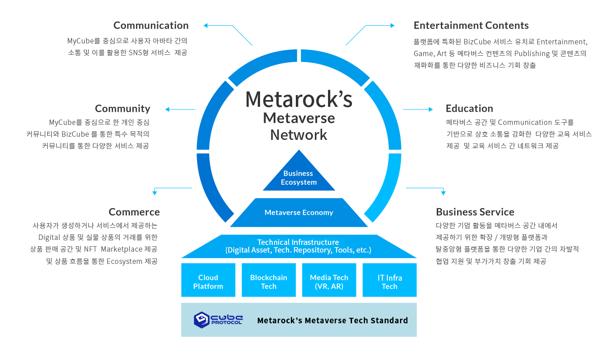
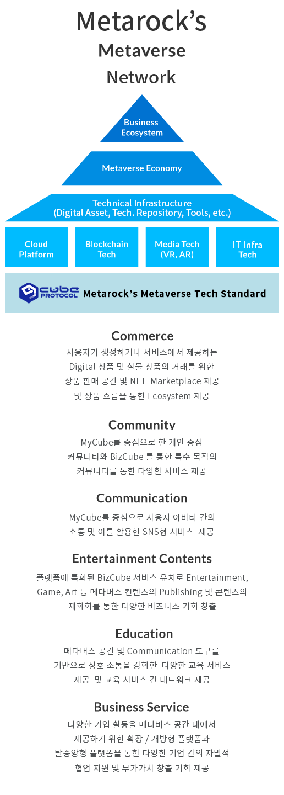

BUSINESS · DotCube Protocol
DotCube Protocol를 통해
새로운 AI 네트워크를 만들어 갑니다.
METAROCK DotCube Protocol

세계최초 탈중앙 메타버스 - DotCube Protocol (DCP)
자체 개발한 새로운 인터넷 DCP를 활용하여 모든 유저는 무료로 자신만의 메타버스인 Cube를 만들 수 있습니다.
개인의 자신만의 MyCube를, 기업은 기업용 메타버스인 BizCube를, 공공기관은 PubCube를 만들 수 있으며, 메타버스를 통 다 간 편리한 구축이 위한 지원툴 (Map Editor, Avatar Editor 등)을 무료로 제공하여 자신만의 아바타와 Cube를 만들 수 있습니다.
이들이 만들어낸 다양한 Cube들은 DCP로 서로 연결되어 클라단 제한 없는 이동과 자유로운 확장이 가능합니다.
- 개인용 메타버스 - MyCube
-
개인이 자신만의 공간을 만들고
꾸밀 수 있는 개인용 메타버스
아바타 커스터마이징, 공간 꾸미기 등
- 기업용 메타버스 - BizCube
-
기업이 비즈니스를 위해 활용하는
메타버스 공간
쇼룸, 전시장, 회의실 등 구현
- 공공기관용 메타버스 - PubCube
-
공공기관이 서비스 제공을 위해
활용하는 메타버스 공간
교육, 민원처리, 공공서비스 등
Metaverse Network based on DotCube Protocol
DotCube Protocol 기반 Metaverse Network
 메타록은 다양한 산업 분야에 메타버스를 접목시켜 새로운 가치를 창출하고자 합니다.
Direction of DotCube Protocol
DotCube Protocol의 방향성
- 기존 메타버스 상황
-
플랫폼의 공간을 중심으로 한
서비스 사용자 네트워크 - 대형 플랫폼의 메가 서비스화 (독점적 중앙화 진행)
- 독립 서비스의 플랫폼 지향 및 고립 (자체 서비스의 진입 장벽에 따른 소규모 서비스의 플랫폼화 및 마케팅 제약으로 인한 고립화)
- 플랫폼 제약으로 인한 사용자 경험 제한 (제한된 기술 규격 및 공간 다양성 제약)
-
중앙화된 플랫폼 서비스에 의한
비즈니스 확장의 한계
- 메타버스 서비스 지향점
- 확장된 사용자 경험을 위한 서비스 구조
-
Wed3.0의 대표적 서비스 프레임으로
탈중앙화 기반 서비스 -
각 개별 서비스간의 네트워킹을 통한
소통과 공유 필요 -
5G 기반 네트워크, ComputingPower,
사용자 하드웨어의 다양화 등 기반 인프라를 활용한 강회된 사용자 경험 -
블록체인 등 웹 3.0 서비스와 결합된
비즈니스 생태계를 담을 수 있는 비즈니스플랫폼으로서의 메타버스 서비스
- DotCube의 방향성
-
사용자의 개별 경험을 중심으로
다양화되고 유기적으로 연계되어 있는 확장된 메타버스 세계 구현 -
탈중앙화 기반의
메타버스 네트워크 서비스 구현 - 개별 비즈니스의 특성을 가진 서비스간의 네트워크 및 사용자 네트워크를 연결할 수 있는 기술 기반 제공
-
서비스의 확장성을 고려한
Technical Platform 구성 (사용자 몰입을 강화할 수 있는 기술기반 확보) - 개별서비스의 독립성을 보장함과 동시에 네트워크내에서 다양한 자원을 공유할 수 있는 개방형 구조 수립